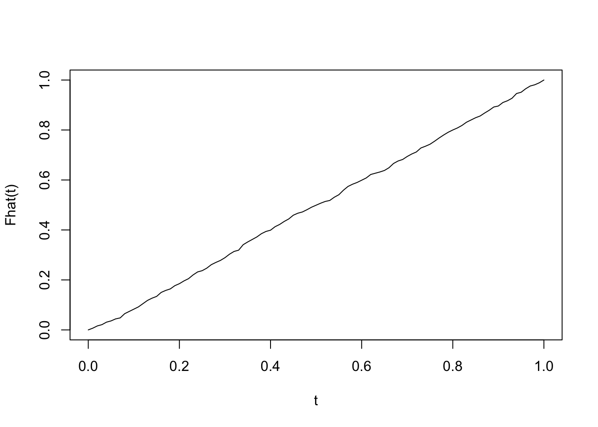
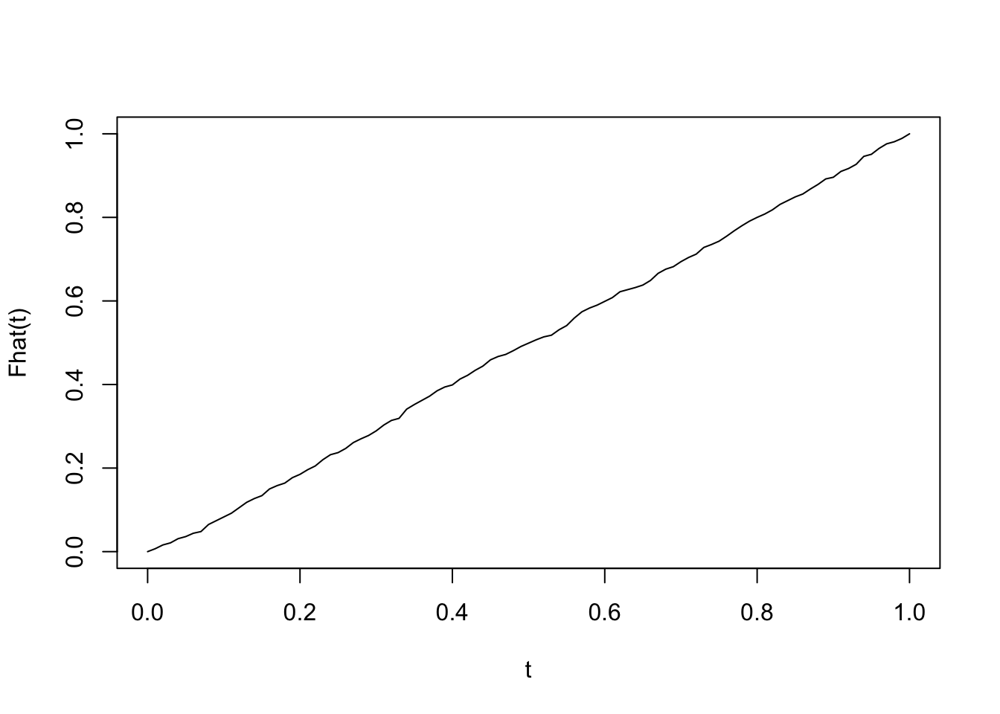

grid_pts <- seq(0, 1, 0.01) # points t at which to evaluate empirical cdf
x <- runif(1000)
plot(grid_pts, ecdf(x)(grid_pts), xlab = "t", ylab = "Fhat(t)", type="l")
A linear congruential generator is a classic method for random number generation. (Of course, as the method is deterministic given an initial seed, the outputs are really pseudo-random numbers).
The generator produces a sequence of integers \(x_1, x_2, ...\) defined by
\[x_{n+1} = (ax_n + c) \ \text{mod} \ m\]
given an initial integer seed \(0 \leq x_0 < m\) and integer parameters \(m\), \(a\), and \(c\):
To generate random numbers between \(0\) and \(1\), we divide by \(m\):
\[u_n = \frac{x_n}{m}\]
Choices for the parameters \(m\), \(a\), and \(c\) are often made to satisfy the following conditions:
Making \(m\) a power of 2 makes the modulus operation very easy with binary arithmetic. The other conditions ensure that the period of the generator (the number of steps before the sequence repeats) is equal to \(m\) (i.e., the longest possible period), for any initial seed \(x_0\). A large value for \(m\) is helpful because it gives a longer period, allowing us to better fill in the gaps between \(0\) and \(1\).
Question: Write code in R to simulate 1000 numbers between 0 and 1 using a linear congruential generator with \(m = 16\), \(a = 5\), \(c = 3\), and initial seed \(x_0 = 1\).
Question: Verify that the sequence you simulated in question 1 has a period of length \(m = 16\).
The most basic property is that the generated numbers should have (approximately) a \(Uniform(0, 1)\) distribution. To assess whether the distribution of the generated random numbers looks uniform, we can examine the empirical cdf:
Definition: (Empirical CDF) Suppose that \(X_1,...,X_n\) are a random sample from some distribution with cdf \(F\). That is, \(F(t) = P(X_i \leq t)\). An empirical estimate of \(F\), called the empirical cdf, is given by
\[\widehat{F}(t) = \frac{1}{n} \sum \limits_{i=1}^n {\bf 1}\{X_i \leq t\} = \frac{\#\{X_i \leq t\}}{n}\]
Here, \({\bf 1}\{\cdot\}\) is the indicator function:
\[{\bf 1}\{X_i \leq t\} = \begin{cases} 1 & X_i \leq t \\ 0 & X_i > t \end{cases}\]
In R, the empirical cdf can be calculated with the ecdf function. Here is an example of plotting the empirical cdf for a sample of size 1000 using the runif function:
grid_pts <- seq(0, 1, 0.01) # points t at which to evaluate empirical cdf
x <- runif(1000)
plot(grid_pts, ecdf(x)(grid_pts), xlab = "t", ylab = "Fhat(t)", type="l")
Question: Plot the empirical cdf for your sample generated in question 1. Does the empirical cdf look like the cdf of a \(Uniform(0, 1)\) random variable?
Question: Increase \(m\), while still obeying the conditions listed above (one possible choice is \(m =2^{32}\), \(a = 1664525\), and \(c = 1013904223\)), and draw another sample of size 1000. Remake the empirical cdf plot, and confirm that the distribution looks closer to a \(Uniform(0, 1)\).
While empirical cdfs are a useful first step, it turns out that assessing whether our numbers are truly random is actually quite a difficult task. No one single test can tell us whether our simulated numbers really behave randomly.
Question: Generate another sample of size 1000 from your LCG. This time, set \(m = 1024\), \(a = 1\), \(c = 1\), and \(x_0 = 12\). Plot the empirical cdf; does it look close to a \(Uniform(0, 1)\)?
Question: Compare the first 20 entries of your sample in question 5 with your sample in question 4. Which one looks more “random”? Explain.
Question: In practice, a suite of tests is used to try to get at different aspects of randomness. One battery of tests for random number generators is the diehard tests. Read the Wikipedia article on diehard tests; which test(s) do you think the sample from question 5 would fail?